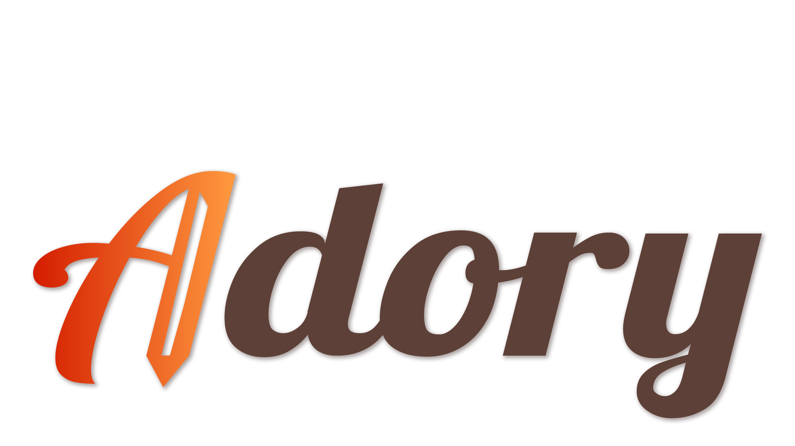
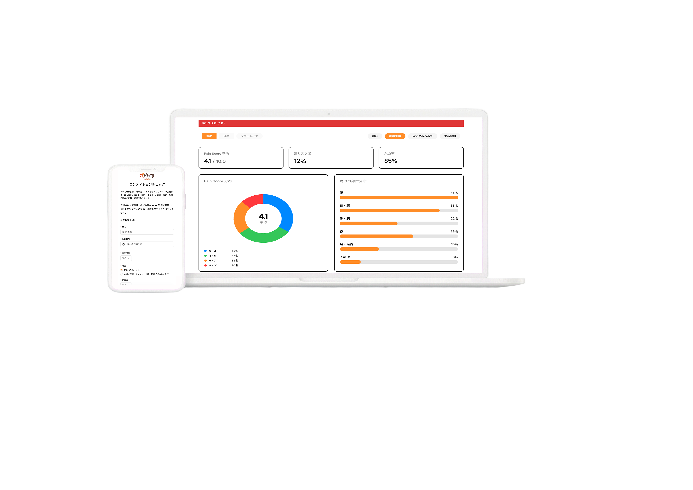
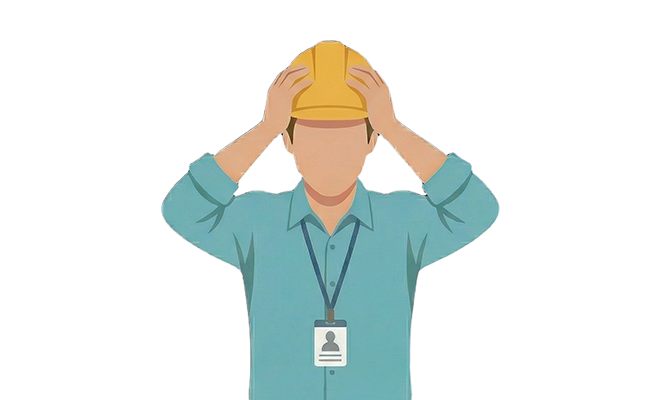
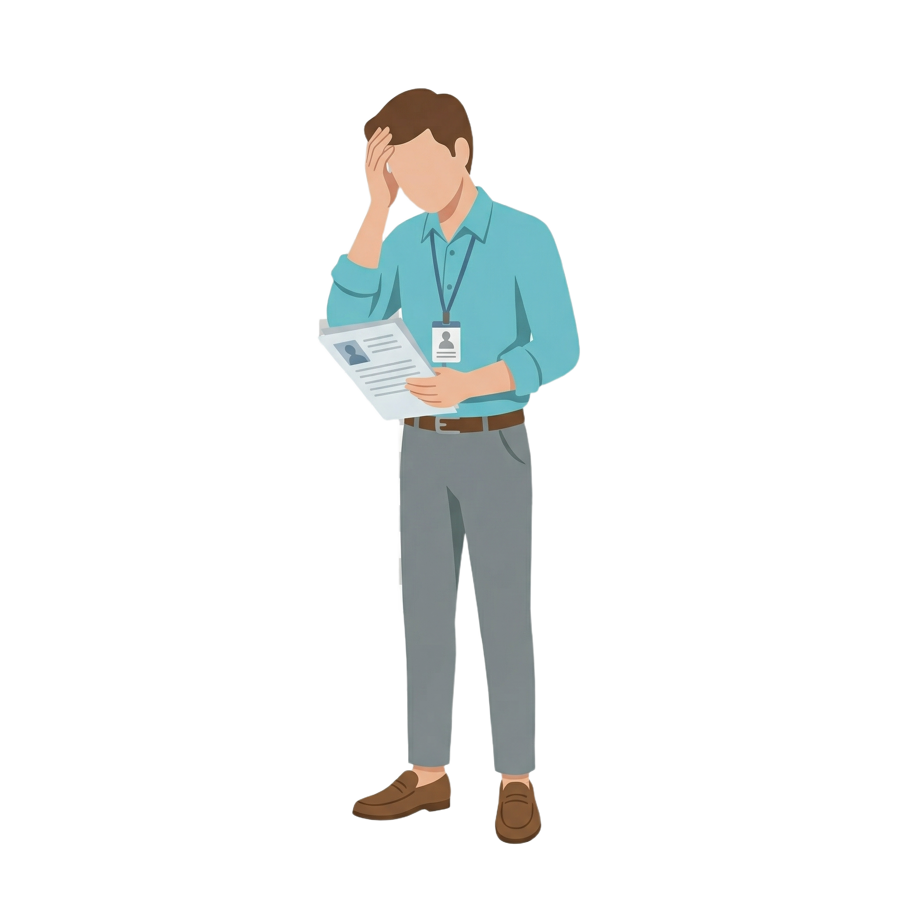
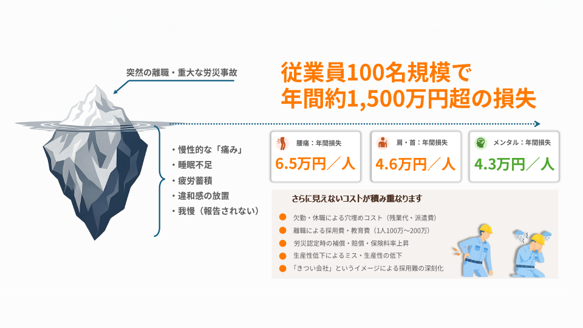
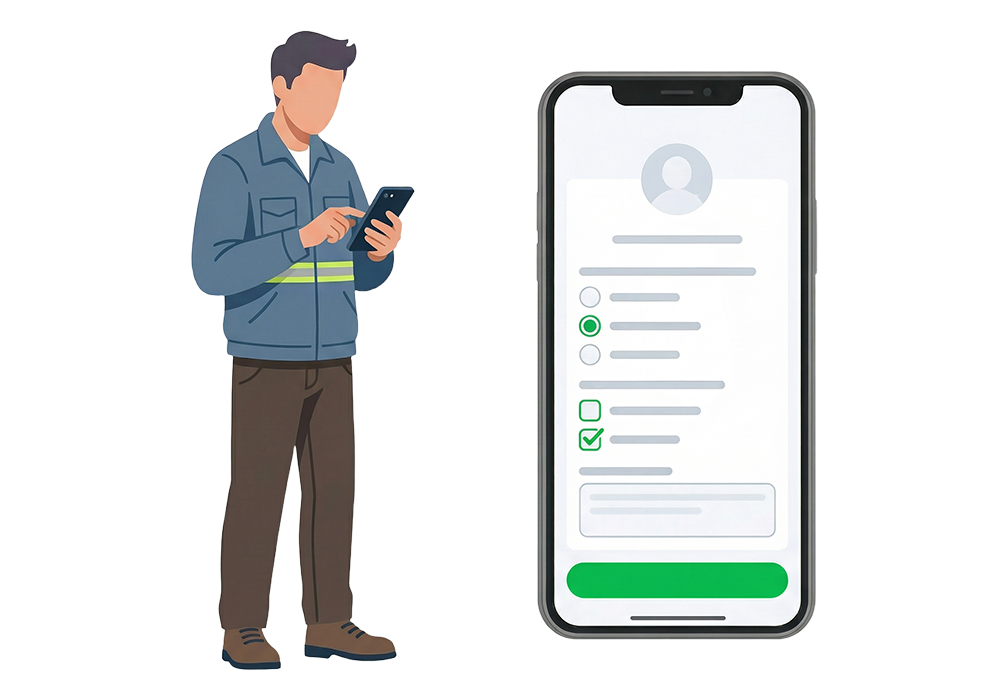
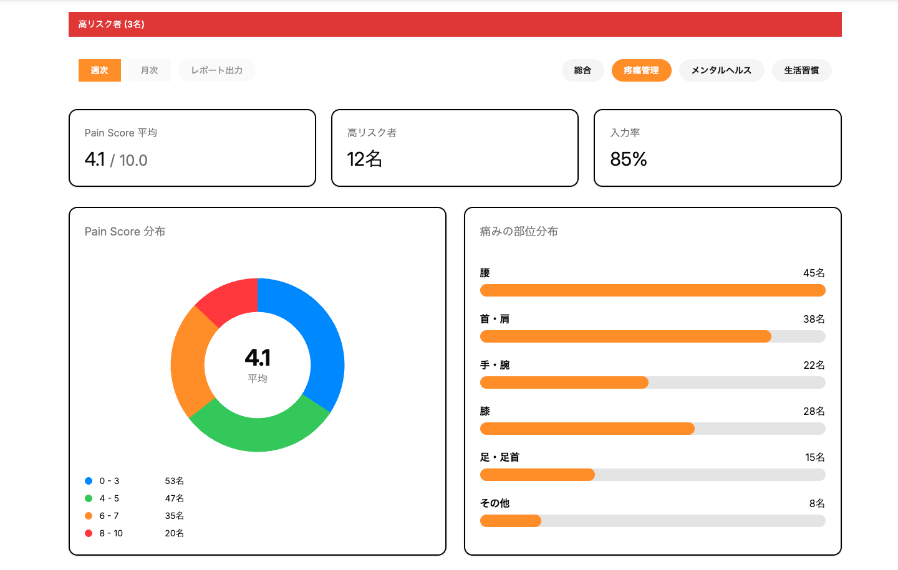
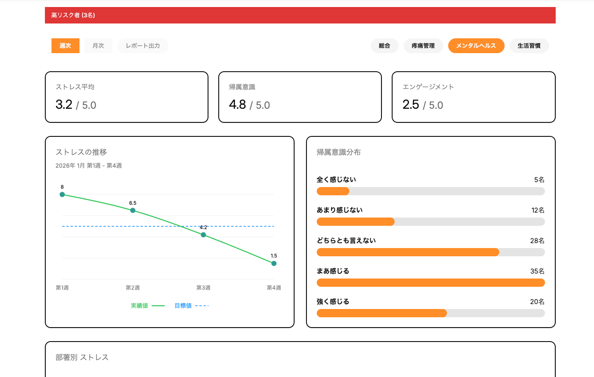
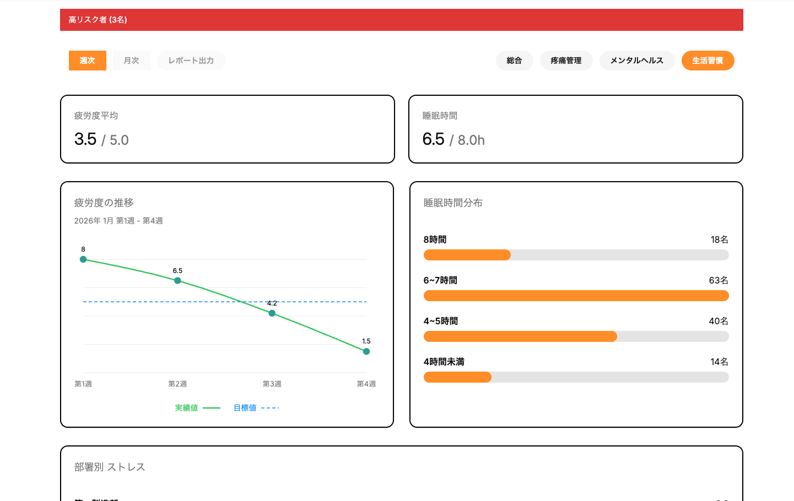

「痛み」を見える化し、労災と離職を未然に防ぐ
現場特化型コンディショニングSaaS
「Adory（アドリー）」
労災・離職・採用難 —— その根っこは、"見えない痛み"です

こんな状況、思い当たりませんか？


現場の"我慢"は、会社の損失になる

今の対策は、遅すぎる
我慢・放置
ミス・集中力↓
休職・離職
採用難
ストレスチェック
年1回の健診・ストレスチェックの限界
Adoryは「先行指標」で現場を可視化する
管理者が先手を打てる仕組みをつくる
現場に負担をかけない設計
アプリDLやPCは一切不要。普段使いのスマートフォンで完結。ログイン・パスワード無しで、直感的に入力可能。
ダッシュボードで即確認
部署別、職種別に可視化。管理者が高リスク者リスト、部署別スコアからどこに介入すべきか一目で分かる。
データが証拠になる
週次記録が安全配慮義務の履行証拠。労災・損害賠償リスクから会社を守る。従業員の予兆も管理。
Adory SaaS の詳細機能
LINEだけで"現場の状態"が見える
アプリDL, PC, パスワード不要。普段使いのLINEだけで完結の設計

選び抜かれた6問の設問設計
この6問で、疼痛・メンタル・生活習慣の3領域を毎週先行把握できる
管理者が「労災・離職リスク」に先回りで介入できる
高リスク者・部署別スコア・時系列推移。感覚ではなく「データ」で動ける管理者になる。
高リスク者管理
一定の閾値以上、スコア低下など条件に合致した人を自動アラート。労災・離職リスクに即時対応できる
痛み部位ヒートマップ
腰・肩・膝などの部位別の分布を棒グラフで可視化。負担が集中する業務を特定できる
時系列スコア推移
個人・チーム単位でスコア変化のトレンドを追跡。悪化する前に介入できる
未回答者管理
誰が未回答かを即確認。形骸化を防ぐ管理者リマインド。運用設計を一緒にサポート
部署別・職種別比較
どの部署・職種のリスクが高いかを比較分析。配置転換・業務軽減の意思決定ができる
権限設定（RBAC）
経営・現場には全体スコア。管理者には個別でスコア表示。現場と経営で適切な意思決定ができる
具体的な介入アクション（1画面例）

高リスク者に即時介入できる
・高リスク者に個別ヒアリング（上司・管理者）
・業務負荷の一時軽減・シフト調整
・専門家（医療機関/産業医など）への連携
現場の負担構造を改善できる
・負担が集中している作業の特定
・作業工程の見直し（持ち方・姿勢）
・ストレッチ・体操導入 or 刷新
会社を"法的リスク"から守る証拠が残る
「知らなかった」より「知っていて対処した証拠がある」会社の方が、万が一の際に法的に守られます。
（安全配慮義務）
企業の法定義務
・年1回の健康診断・ストレスチェック
・安全衛生委員会
・作業管理・安全教育
社労士のサポート
・義務手続きの代行
・就業規則の整備
・離職・労災発生時の初期相談
管理の空白地帯
・日々の身体の痛み
・疼痛・疲労の蓄積
・離職直前のサイン
管理者不在！放置が事故・離職に繋がる
リアルタイムで現場全体の
健康状態が把握できる



導入メリット
サポート費用：¥0
最短：翌週から運用開始
31名以上：+500円/名
防げるリスクの大きさ（vs Adory年間コスト）
熟練工が1名辞めずに済めば、Adoryの年間コストは約140倍のROIになります。
※1件でも防げばROIは数十倍
料金プラン
Adory SaaS 基本プラン
- 週1回・6問で現場の「痛み・疲労」を可視化
- 高リスク者を自動検知（労災・離職予防）
- 部署別・職種別ダッシュボード提供
- 安全配慮義務の履行証拠データを自動蓄積
- CSによる伴走サポート
＋ 現場ケアオプション
- 理学療法士・柔道整復師等の有資格者が対応
- データに基づいた的確なケアを提供
- 要望に合わせて時間・回数はカスタマイズ可
最短1週間でサーベイ配信スタート
お問い合わせ
Webまたは担当者にご連絡
ヒアリング
課題・現場規模・目的をお聞きします
設定
LINE連携・従業員情報の登録
オンボーディング
管理者・従業員への操作説明
運用スタート
週次サーベイ配信開始
まずはPoC（3ヶ月）から始めませんか？
初期費用0円・最短1週間で開始・解約期間要相談。「効果を見てから」導入判断可能。
よくある質問
「壊れる前に守る」、
あなたの会社から始めませんか。
苦労して採用した若手やベテラン社員1名が辞めずに済む、その1回分のコストを考えてください。
Adoryの年間費用は35.8万円。1名分の採用費の約4分の1です。